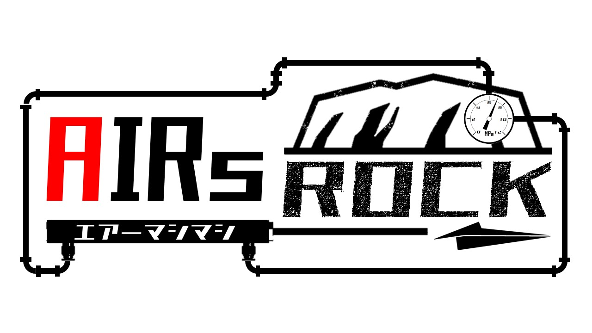

高専4年生(19歳) 高専ロボコンに参加(2020～2023) 機械と制御を勉強中
mechanic
工作機械
- 卓上ボール盤
- コンターマシン
- 卓上CNCフライス盤
- 3Dプリンター
- レーザー加工機
CAD・CAM
- Creo9.0
- Solid Works
- Fusion 360
program
- Python: GUI・画像認識
- Arduino: esp32・Arduino
other
- GeoGebra
- Aviutil
- KiCAD
2021 高専ロボコン
ルールは2分30秒で自分たちが考えた凄いロボットでパフォーマンスを行うものでした。
プロジェクト名は「機巧神コウダイオー」です。 椅子型コントローラーで操縦する人型ロボットです。私は左腕のロケットパンチ機構を設計しました。
地区大会は第3位で本田技研工業株式会社特別賞を受賞しました。 全国大会は第7位でした。
大会の映像はこちらです。
2022 近畿地区合同ロボコン
ルールは2分30秒で自作した苗というオブジェクトを直売所と呼ばれる円柱の上に置き、 ビーンバックと呼ばれる四角形の袋を中央の穴に入れて得点を競う競技でした。
プロジェクト名は「とっとこ公太郎」です。 素早く移動して勝利を目指すロボットです。私は中央の発射機構を設計しました。
大会はベスト4でデザイン賞を受賞しました。
大会の映像はこちらです。
2022 高専ロボコン
ルールは2分30秒で自作した紙飛行機を特定のオブジェクトに乗せて得点を競う競技でした。
プロジェクト名は「AirsRock」です。 8.5m先の細長い筒を狙うロボットです。私はチーム紹介PVを製作しました。
地区大会は予選ラウンド敗退でデザイン賞を受賞しました。 全国大会は2回戦敗退で、ローム株式会社特別賞を受賞しました。
私が製作したチーム紹介PVはこちらです。
大会の映像はこちらです。
2023 高専ロボコン
ルールは2分30秒でフィールドのポールの上にぶら下がっているフルーツを模したオブジェクトを回収していく競技です。 また、フィールドを1周すると、お助けアイテムと呼ばれるものをロボットに付けて、高所のフルーツを取ることができます。
プロジェクト名は「鴉」です。 高速でフィールドを1周して、中央のフルーツを占領するロボットです。 私はチーム紹介PVの製作とお助けアイテムの角度を変えるための角度調整機構を設計しました。
地区大会は予選ラウンド敗退でアイデア賞を受賞しました。 全国大会は優勝しました。
ロボットの製作以外にも練習のためのタイマーと敵の戦力をまとめるためのツールを作成しました。
私が製作したチーム紹介PVはこちらです。
大会の映像はこちらです。
基礎研究は高専4年次にある授業です。 1グループ5人で1つのルールに対して4月から高専祭がある11月までの期間で設計・製作を行う授業です。
ルールは回転寿司をロボットハンドのDobotを用いてDX化するというものです。 寿司を皿に設置して、皿レーンに提供することと、提供した寿司を廃棄することを行いました。
私は画像認識で寿司の種類と位置を特定するプログラムと、寿司の廃棄と提供を行う機構のプログラムと それらの通信をまとめるプログラムを作成しました。

画像認識の動作の映像はこちらです。
機構の動作の映像はこちらです。